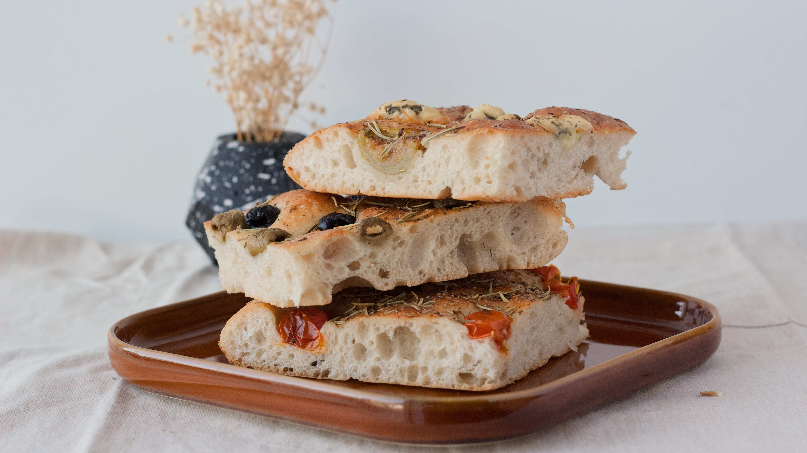

FOCACCIA
By Helene Grimstad
Difficulty: Easy
#focaccia #italian #EasyRecipe
Foccacia is a relatively flat bread that we usually associate with the Italian cuisine. The delicious bread is quick and easy to make.
Ingredients
- Flour 1kg
- Yeast 50g
- Water, lukewarm 9dl
- Olive oil 2tbs
- Salt 1tbs
- Rosemary
Instructions
- Mix the ingredients together to a dough, and let sit until double in size.
- Evenly lay the dough out on a abaking tray, and let sit for 20 minutes. Put the oven to 200'C
- Pour over some Extra Virgin Olive Oil, and press your fingers into the dough. Add maldon salt and finely cut rosemary.
- Put the baking tray in the oven for 25 minutes and enjoy with your favourite salad!